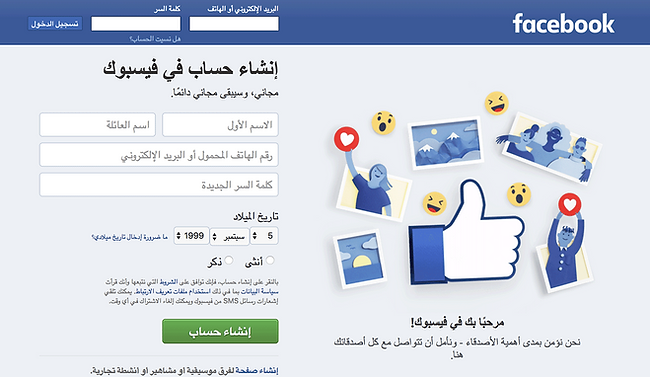
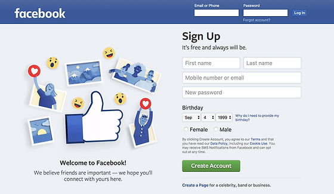
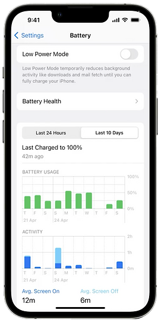
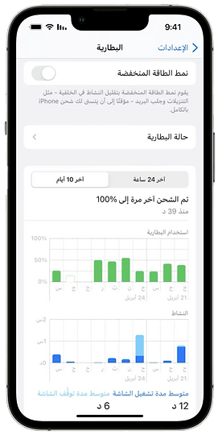
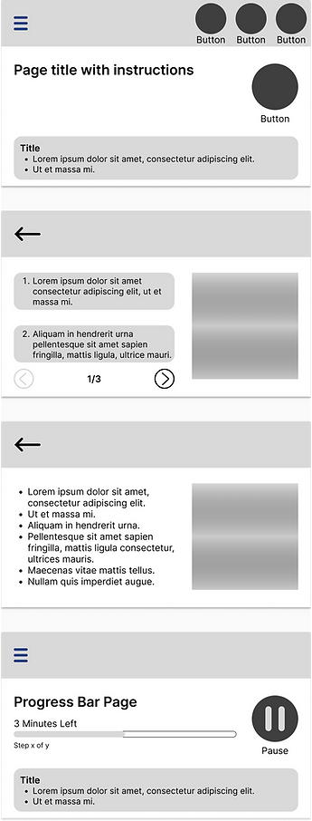
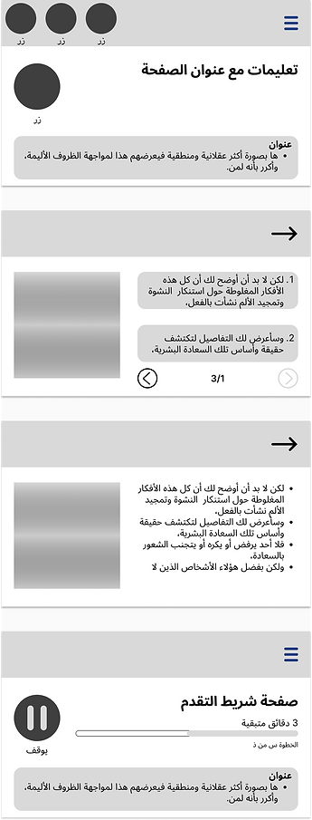

The Brief
A fully-shipped product. A global market. A design system built for one direction.
"This wasn't a translation project. It was a systems problem — every layout assumption baked into the original design had to be interrogated, not just mirrored."
Problem Definition
Four compounding design challenges — all patient-safety critical.
Challenge 01
Structural Mirroring Logic
Every spatial assumption in the LTR design — text alignment, progress flow, navigation placement, step sequencing — needed a principled RTL equivalent. Not every element mirrors; knowing which ones do, and why, required a rule system, not a blanket flip.
Challenge 02
Cultural Nuance Beyond Directionality
RTL is not merely horizontal inversion. Icon meaning, imagery composition, and interface metaphors carry cultural weight. Adapting them required understanding which elements are universal and which are culturally specific to Arabic and Hebrew contexts.
Challenge 03
Medical Terminology Precision
Clinical instructions must survive translation without ambiguity. In a device that guides users through safety-critical procedures, any loss of precision in Arabic or Hebrew copy is a regulatory and patient safety issue — not merely a localization concern.
Challenge 04
Maintaining a Single Codebase
The solution couldn't fork into parallel design systems. RTL support had to be implemented as a scalable overlay on the existing component architecture — meaning every design decision needed to be technically legible to a single development team.
Research & Discovery
Before designing RTL, I learned to read it.
I couldn't design for a reading experience I'd never inhabited. Before mapping a single screen, I reconfigured my own iPhone to Arabic and Hebrew — not as a token gesture, but as a structured immersion exercise. It was the fastest way to experience the precise moments where LTR design assumptions create friction, and to build spatial intuition for RTL before touching a design file.
Competitive Benchmarking
Benchmarking: Arabic Facebook Login (2017) vs. English equivalent

Text pre-filled right-aligned · Numbers remain LTR · Logo not reflected (Latin characters) · Images and emojis flip position but not orientation

Standard left-to-right layout used as baseline comparison point for benchmarking key structural differences
Immersive Device Testing
iPhone set to Arabic — immersive RTL environment research

Familiar LTR navigation, gesture flow, and spatial anchoring — the assumed defaults that RTL disrupts

Full system RTL experience — revealing where spatial logic inverts and where universal affordances hold
Usability Testing
Native speakers, conflicting feedback, and a decision that had to be made.
Four moderated usability sessions — two in Arabic, two in Hebrew — with native readers evaluating a visual simulator of the device software. Linguistic experts validated text rendering and typographic precision for each script. The sessions surfaced a direct conflict: participants disagreed on whether certain directional iconography should be mirrored. The data was inconclusive, and the decision fell to the lead Human Factors engineer and me to resolve.
Inconclusive usability data is not a failure — it's a signal. Our job was to resolve ambiguity through principled decision-making, not to wait for consensus that wasn't coming.
Usability Study Findings
Three definitive rules emerged from synthesis across all four sessions and expert consultation — forming the foundational logic of the RTL design system.
Progress flows right to left
Forward movement in the interface — stepping through a procedure, advancing to the next screen — is represented spatially from right to left. Navigation arrows pointing right indicate going back; arrows pointing left indicate moving forward. Progress bars fill from right to left.
Confirmed across all 4 sessionsUniversal icons do not flip — directional icons do
A clock, a checkmark, a warning symbol — these carry meaning independent of directionality and must not be mirrored. Directional icons (arrows, progress indicators, swipe cues) are spatially anchored and must be reversed to preserve their intended meaning in an RTL reading context.
Resolved conflicting feedback · Engineer + Designer decisionNumbers remain left-to-right
Numerical values — step counts, device readings, dosage figures — are read left-to-right in both Arabic and Hebrew contexts. Inverting them would create dangerous ambiguity in a clinical setting. This rule protected against a well-intentioned but incorrect blanket-mirroring approach.
Critical patient safety ruleDesign Solution
Not a mirror. A considered inversion built on explicit rules.
The final RTL screen designs were not the output of a global "flip horizontal" operation. They were the product of applying a deliberately constructed rule system to every element in the interface — component by component, screen by screen.
English (LTR)

- Text left-aligned throughout
- Forward arrow points right
- Progress bar fills left to right
- Step period to the right of the number
- Page navigation: forward arrow on right
Arabic (RTL)

- All text right-aligned
- Forward arrow points left
- Progress bar fills right to left
- Step period to the left of the number
- Page navigation: forward arrow on left
All images are portfolio mockups. Proprietary device screens omitted per NDA.
The Rule System
Every component was evaluated against three questions: Does it carry directional meaning? Is its meaning culturally universal or contextual? Does inverting it risk clinical misinterpretation? The answers produced per-component rules — documented in Figma and handed off as a standalone RTL specification sheet.
Cross-Functional Collaboration
Three disciplines, one shared specification.
Software Developer
Engaged from the outset to surface technical constraints before designs were finalized. Regular design-to-development handoff sessions ensured RTL-specific rules — text alignment, directional icons, progress logic — were unambiguous in implementation. Joint reviews flagged mismatches before they became rework.
Human Factors Engineer
Partnered on resolving the conflicting usability testing data. When sessions produced opposing findings on icon orientation, the HF engineer and I synthesized the evidence together and made a principled, documented decision — rather than leaving the ambiguity for development to interpret.
Product Manager
Aligned on scope boundaries — specifically, which components required RTL-specific treatment vs. which could be addressed through standard localization. PM involvement ensured the RTL work was sequenced within a realistic sprint timeline without compromising the global release date.
Linguistic Experts
Consulted to validate Arabic and Hebrew text rendering, script recognition, and typographic nuance. Their input was particularly critical for medical terminology — ensuring clinical instructions survived translation with precision intact.
Outcomes
A scalable RTL system, ready for global release.
Global Market Readiness
The device shipped with a culturally validated, linguistically precise interface for Arabic and Hebrew — meeting both regulatory and usability standards for international release.
Reusable RTL Specification
A documented, component-level RTL rule system was handed off to development — creating a reusable foundation for future language expansions beyond the initial two RTL scripts.
Patient Safety Preserved
The three-rule system — directional flow, icon flip logic, and number formatting — ensured clinical instructions remained unambiguous across both RTL scripts in a safety-critical context.
Retrospective
What I'd carry into every future i18n project.
Conflicting data requires a decision, not a delay
When usability sessions produce opposing findings, the answer is not to run more sessions hoping for consensus. It's to synthesize the existing evidence, make a principled, documented decision, and test that decision — not the original question again.
Test on real hardware next time
All sessions were conducted using a visual simulator. While effective, simulator-based testing cannot fully replicate the physical interaction context of a medical device — particularly for gesture-based navigation. Future RTL validation should incorporate actual device hardware as early as the testing protocol allows.
From the Designer
This project taught me that global design is really just good design — it forces you to question every assumption you've baked into your defaults. Direction, iconography, number formatting: things that feel "neutral" are only neutral to one language's speakers. Designing for RTL didn't expand my definition of good UX. It clarified it.